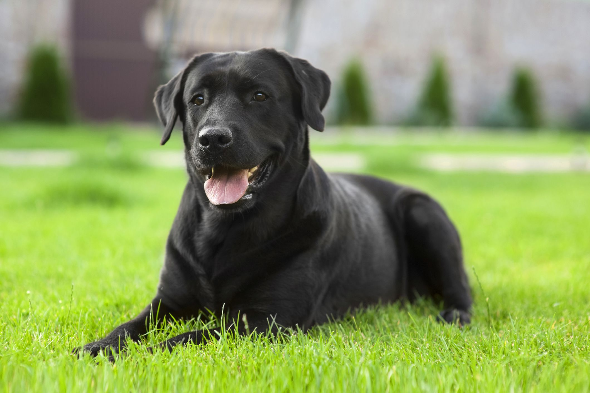

Column_1__About_cats
Cats are adorable pets that are loved by many people around the world. They are known for their playful and curious nature, making them entertaining companions. These furry creatures are often independent but can also form strong bonds with their human owners. Cat owners enjoy spending time cuddling and interacting with their feline friends. Overall, cats bring joy and comfort to households, making them cherished members of many families.

Column_2__About_dogs
Dogs are wonderful animals that are beloved by people all over the world. They are known for their loyalty and devotion to their human companions. These furry friends are not only great companions but also excellent protectors of their families. Dogs love to play and be active, making them perfect partners for outdoor adventures. Many people find comfort and happiness in the company of their loyal and affectionate canine companions.
Training for dogs - Vinnytsia Regional Center "KANIS"
The center was founded in 1991. The first manager was Olena Kostyantynivna Maievska.
In 1996, the center became part of the Kennel Union of Ukraine and since then has been fruitfully
working in canine breeding activities, exhibitions and sports with dogs.
Since 2005, Oksana
Valeryivna Sentimrei, a judge of the International Category of the ICF, has been the head of the
cell.
Vinnytsia, st. Stetsenko, 75 A. Telephone +380 68 340-17-77.